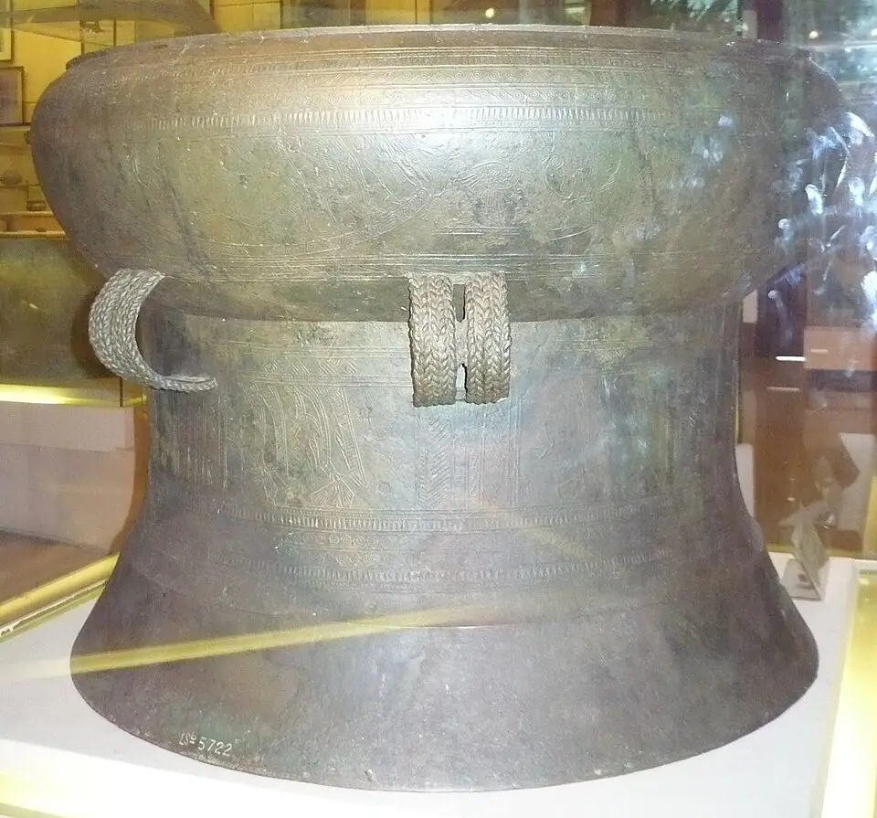
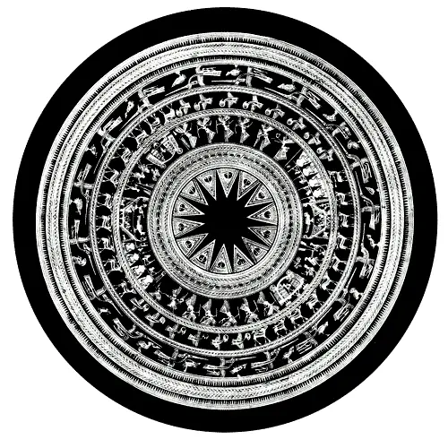
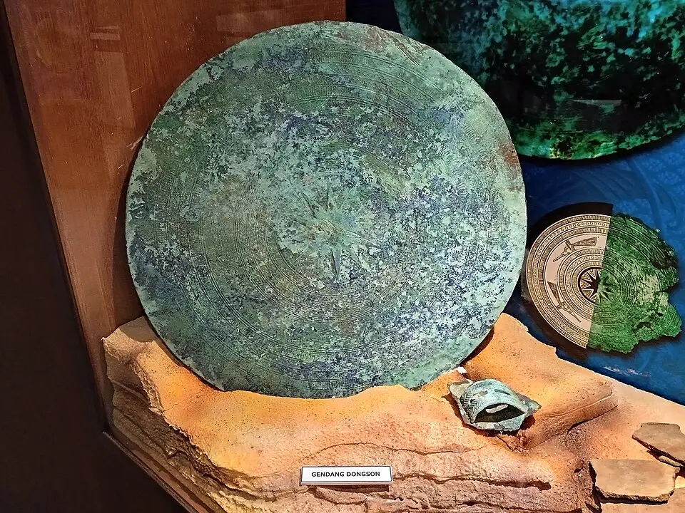
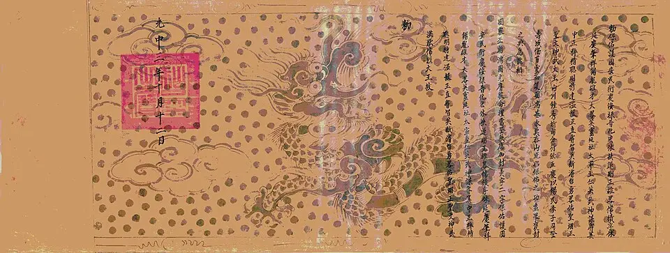

Trống đồng Đông Sơn: chiếc trống làng Ngọc Lũ và những người anh em ở tận Indonesia
Khoảng năm 1893, dân làng đi đắp đê đào được một chiếc trống đồng nặng 86 kg và đem về cúng vào đình. Chiếc trống ấy là trống Ngọc Lũ, nay là bảo vật quốc gia, còn họ hàng của nó đã được tìm thấy từ Vân Nam đến tận gần đảo New Guinea.

Khoảng năm 1893, mấy người dân đi đắp đê ở xã Như Trác, Hà Nam, đào xuống bãi cát bồi chừng hai mét thì gặp một chiếc trống đồng. Họ không đem nấu chảy hay đem bán. Họ khiêng về cúng vào đình làng Ngọc Lũ, để đến ngày tế lễ thì lấy ra đánh. Chín năm sau, chiếc trống được đưa lên Hà Nội trưng bày, và Trường Viễn Đông Bác Cổ bỏ ra 550 đồng bạc Đông Dương để mua lại. Ngày nay nó là hiện vật nổi tiếng nhất của thời đồ đồng ở Việt Nam.
Ai đúc những chiếc trống này
Trống Ngọc Lũ thuộc loại mà nhà nghiên cứu người Áo Franz Heger xếp vào Loại I trong cuốn sách năm 1902 về 165 chiếc trống kim khí ở Đông Nam Á. Ngày nay người ta gọi chúng là trống Đông Sơn, theo tên làng Đông Sơn ở Thanh Hóa. Năm 1924, một người dân chài ở đó tên là Nguyễn Văn Lắm báo cho Trường Viễn Đông Bác Cổ rằng ông gặp rất nhiều đồ đồng, và cuộc đào bới bắt đầu. Cái tên của một ngôi làng trở thành tên của cả một nền văn hóa.
Người Đông Sơn trồng lúa nước, nuôi trâu, đánh cá và đi thuyền độc mộc dài. Họ đúc trống bằng kỹ thuật khuôn sáp, từ khoảng năm 600 TCN hoặc sớm hơn cho đến thế kỷ 3. Có chiếc cao gần một mét, nặng đến 100 kg. Riêng trống Cổ Loa nặng 72 kg, và theo một ước tính, phải nấu từ 1 đến 7 tấn quặng đồng mới đủ kim loại để đúc.
Ai là chủ nhân thì vẫn còn tranh luận. Các nhà sử học Việt Nam gắn trống với nước Văn Lang và Âu Lạc. Một số học giả như Keith Taylor cho rằng chưa có bằng chứng trực tiếp nối những người đúc trống với người Việt ngày nay. Các nhà khảo cổ Trung Quốc thì cho rằng những chiếc trống sớm nhất, loại Vạn Gia Bá, xuất hiện ở Vân Nam. Chỉ một điều chắc chắn: đó là những người thợ đúc rất giỏi.
Mặt trống kể gì


Trống Ngọc Lũ có mặt rộng 79 cm, cao 63 cm. Chính giữa mặt trống là ngôi sao nổi 14 cánh, bao quanh là 16 vành hoa văn đồng tâm. Ba vành có hình người, nhà và thú. Có những người đội mũ lông chim, mặc váy, tay cầm rìu hoặc giáo, có người thổi khèn. Có đôi trai gái cầm chày giã gạo, đầu chày cũng gắn lông chim. Có những ngôi nhà sàn mái cong như mái thuyền. Một vành có hai đàn hươu, mỗi đàn 10 con, con đực con cái xen nhau. Vành khác có 36 con chim, 18 con đang bay và 18 con đang đậu.
Chi tiết lạ nhất là một cảnh người ngồi cầm chày dài đánh vào một dãy trống đặt trước mặt. Chiếc trống, nói cách khác, có khắc hình chính những chiếc trống đang được đánh. Trên thân trống là sáu chiếc thuyền chở chiến binh: người cầm lái đội mũ lông chim cao, người bắn cung đứng trên sàn thuyền, người đứng giữa cầm trống chỉ huy. Các nhà khảo cổ đồng ý rằng đây là một lễ hội hay nghi lễ, nhưng chưa ai đọc chắc được ý nghĩa của ngôi sao ở giữa.
Trống đi xa đến đâu


Hơn 200 chiếc trống loại này đã được tìm thấy, trên một vùng trải từ miền nam Trung Quốc, qua Việt Nam, Lào, Thái Lan, Malaysia, đến các đảo Sumatra, Java, Nusa Tenggara và quần đảo Kai gần Papua. Trống còn được phát hiện ở New Guinea. Những chiếc trống này không tự đi. Chúng được chở bằng thuyền, đổi chác, làm quà, làm của gia bảo qua nhiều đời.
Ở Indonesia, người ta còn học cách làm trống riêng. Trống kiểu Pejeng ở Bali dáng thon dài hơn, mặt và thân được đúc rời rồi ghép lại. Chiếc lớn nhất, gọi là Mặt Trăng Pejeng, cao 186,5 cm. Điều đáng chú ý là Bali không có đồng và cũng không có thiếc. Mọi kim loại làm nên chiếc trống ấy đều phải đi đường biển đến đảo.
Sử sách chép gì


Hậu Hán thư chép rằng tướng Mã Viện, sau khi dẹp cuộc khởi nghĩa Hai Bà Trưng năm 43, đã thu trống đồng của người Lạc Việt ở Giao Chỉ và nấu chảy để đúc ngựa đồng. Các nhà khảo cổ nhận thấy sau cuộc chinh phục của Mã Viện, truyền thống trống đồng ở đồng bằng sông Hồng biến mất, nhường chỗ cho đồ vật kiểu Hán. Việc thu trống, như vậy, không chỉ là lấy kim loại. Trống là biểu tượng quyền lực của các thủ lĩnh địa phương.
Trống không mất hẳn khỏi đời sống. Người ta tìm được trống cổ dưới đất rồi lập đền thờ thần Đồng Cổ, tức thần trống đồng. Người Mường ở Hòa Bình dùng trống trong tang lễ quan lang. Người Karenni ở Myanmar ngày nay vẫn dùng một loại trống đồng muộn hơn làm trống cầu mưa.
Năm 2012, trống Ngọc Lũ đứng đầu danh sách 30 bảo vật quốc gia đầu tiên của Việt Nam. Hơn một thế kỷ trước, nó chỉ là một vật dân làng đào được khi đắp đê và đem về đình. Từ đình làng đến bảo tàng, chiếc trống đã đổi chỗ nhiều lần, nhưng chưa lúc nào bị coi là một đống đồng.